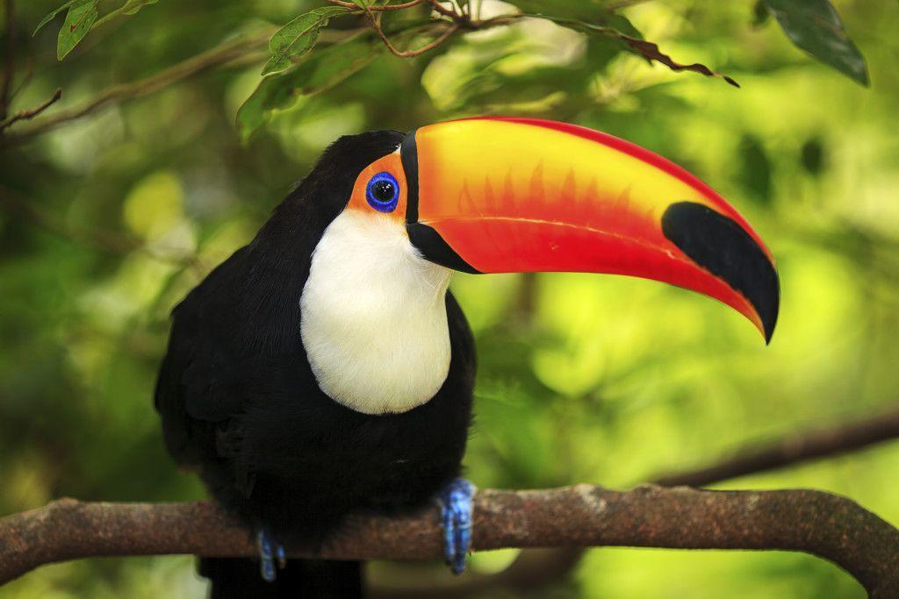

Conheça nossas Aves
Pinguim-imperador
O pinguim-imperador é o maior pinguim do mundo e está adaptado ao frio extremo. Vive na Antártida, enfrentando temperaturas extremamente baixas. É carnívoro e se alimenta principalmente de peixes, lulas e crustáceos.
Tucano
